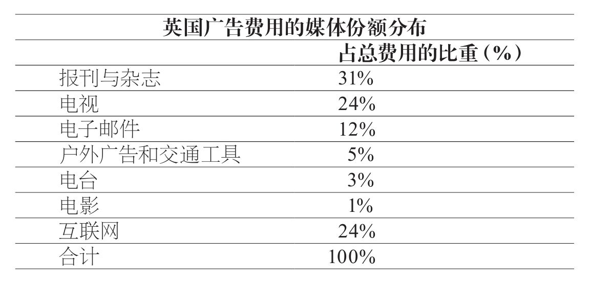
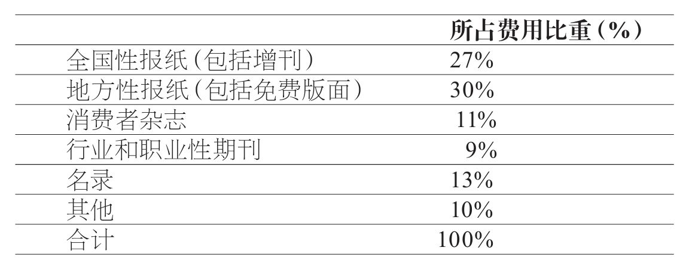
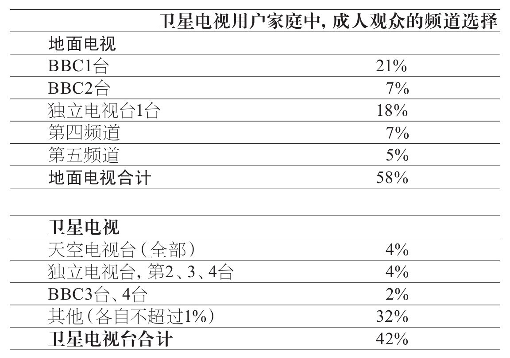

我们现在来看广告行为三方架构的第二部分：刊登广告的媒体。首先，我们还是要仔细界定媒体，因为近来“媒体”一词已经成为行业术语，时常被误用和错用。在过去的一百年时间里，媒体的数量和类型急剧增长。一大批全新的媒体已经出现，而传统的媒体则开始分化，在内部进一步划分，从而以目标更加明确的方式为特定的客户群体服务。随着互联网和数字化的到来，广告媒体领域整体处于大幅度的震荡波动状态。自21世纪初以来，全世界的媒体一直在变化。所有人都在猜测，这些变化最终将走向何方（媒体行业中的每个人都愿意猜一猜）。因此，我们在此所能做的最佳选择，就是清楚地描述当前媒体业的现状，并预测将来的可能发展方向。
英语中的media（媒体）一词，是单数形式medium的拉丁语复数形式。medium一词有几重含义，在《牛津英语词典》中，你可以找到相关定义：
这一定义几乎可以被视作对广告媒体的确切界定：“任何介入性的物质……借助它的作用，印象被传递到感觉器官。”这里所指的印象就是广告，将这些印象传递给我们的感觉器官的主要媒体包括：报纸、杂志、电视、电台、邮件、交通工具上的海报、电影和互联网。
很显然，广告投放者必须向媒体付费，以求传递它们想要的讯息。这将我们引向了广告投放者用于评判媒体实效性的三条基本标准：
在本章，我们将重点放在英国的媒体。但这三个问题对于全球范围内的所有广告媒体都具有重要意义。为了探讨这些问题，我们现在来分别研究英国的主要广告媒体，我们首先来看它们各自的容量大小，衡量标准是花在各个媒体上的广告费用。各个国家的相对媒体容量不尽相同，但主要媒体（常被称为广告业的“黄金媒体”）在各地都起到了重要作用。
不难发现，互联网在短短十几年的时间里已经赢得英国广告市场的巨大份额，正如它在世界上每个国家所做到的那样。互联网的大多数收益来自“搜索”广告，这类广告让你通过点击广告商提供的列表，转到相应的促销网站。互联网搜索广告行为类似于传统的分类广告，互联网所获得的大多数搜索广告原本属于报纸和杂志上的分类广告。

但是，互联网上的展示广告（横幅、弹出窗口，以及类似的其他展示广告）同样也从传统媒体那里抢来了一部分收入，虽然这种抢夺的程度远远比不上“搜索”广告那么夸张。互联网广告已经有了十多年的发展历史，即便如此，没有人能够预测最终它将占到广告业的多大份额，同样也没有人能够预言，传统媒体究竟会遭受怎样的打击。但人们普遍认为，互联网的广告增长还将持续很多年。
虽然如此，传统媒体依然拿到了超过80%的广告费用份额，因此我们将首先讨论这些媒体。
和大多数人的感觉正相反，平面媒体凭借31%的份额，依然是最大的媒体行业。花费在报刊与杂志上的资金可进一步细分。
全国性的报纸
英国有着全世界最有影响力、最多元化的全国性报刊，共有11家主要的全国性日报和同等数量的周日出版的全国性报纸。

全国性日报（读者数量占英国成年人口总数的44%）
周日出版的全国性报刊（读者数量占英国成年人口总数的48%）
这些全国性报纸为广告投放者提供了其他国家无法企及的众多选择。这些报纸在英国的销量有所差别，最多的是《世界新闻报》（3，087，000），最少的是《金融时报》（134，000）。现在，市场调查数据（例如本书第9页所提到的目标群体指数）提供了关于各份报纸读者群体的大量信息。因此，广告投放者在进行广告宣传时可以选择他们的目标市场人群所阅读的那些报纸。购买广告空间的成本大体上和报纸的销量成比例，但部分高质量的报纸，如《金融时报》、《泰晤士报》、《星期日泰晤士报》和《星期日电讯报》，可以收取更高的价格，因为对广告投放者而言，他们的读者更富裕、更具影响力。相当多的广告投放者希望他们的广告宣传能接触到富裕的、具有影响力的人群，因此他们愿意支付高额费用，以求在这些人群所阅读的报纸上刊登广告。
决定广告成本的因素还包括广告的大小、是否采用彩色印刷、广告在报纸中的位置等。大幅广告相比小幅广告成本更高，但成本并非与大小直接成正比：为了鼓励广告投放者购买更大的空间，小幅广告按比例换算后 通常比大幅广告更加昂贵。彩色广告相比黑白广告更贵：在过去，这是因为彩色广告在印刷时成本更高；现在，印刷成本的差别并不大，价格差别主要反映了供求关系。同样，报纸在某些位置收取的广告费更高，许多广告投放者想要这些位置，因为更多读者会注意到这些位置，或者说它们的特定目标市场会注意到这些位置（例如，体育版面上的体育产品的广告）。很显然，广告的印刷成本不会随着位置产生变化，价格差异反映的只是供求关系。
有如此多的报纸可供选择，并且每份报纸都提供了很多选择，因此报纸上的广告空间买卖极为灵活，有很大的协商余地。对于广告投放者来说，作出最终选择的关键因素是千人成本。这一数字代表着在广告投放者的目标市场中让每一千个读者读到该广告所需的成本，无论该广告是大是小，彩色或黑白，位置在哪里。媒体购买专家将会精确计算所有可供选择的报纸达到一千名目标读者时所需的成本。随即他们可以在全部可能的选择之间进行客观的成本比较。除非有特殊情况，媒体专家将建议广告投放者选择最便宜的报纸进行广告宣传。
千人成本这一判断标准，经过适当调整后适用于全部媒体，它可以是接触每一千名读者所需的成本，也可以是接触每一千名电视观众，或电台听众，或（在使用直邮进行销售的情况下）邮件接收者所需的成本。在对不同媒体进行比较时，这一数据没什么用处：你不可能将电视广告的千人成本与杂志广告的千人成本进行合理比较，因为不同媒体的效果完全不同。但对任何单个媒体而言，千人成本是媒体购买者军火库中最强大的单兵武器。假定你将接触目标市场的成本最小化，作为广告投放者，你这样做准没错。
美国和其他许多国家只有少量全国性报纸，并且它们的销量有限。在这些国家，地区性报纸作为广告媒体比起英国的同类报纸更为重要。但是，即使在英国，依然有着超过1，100份地区性报纸，并且，从上文的表格中可以发现，它们的广告数量超过了全国性报纸。这是因为，地区性报纸的读者人数在总量上占到了人口的相当大的比重。
大多数地区性广告收入来自全国性零售商和当地的广告投放者。除了零售商之外，全国性的广告投放者很少在地方性报纸上进行广告宣传。这是因为地方性报纸的千人成本远高于全国性报纸。比如说，在《布里斯托晚邮报》（地方性报纸）上刊登一整页黑白广告的千人成本相比《太阳报》（全国性报纸）高出了六倍。
其他地方性报纸和全国性报纸的比较结果也类似。这就是为什么在英国全国性广告投放者几乎总是使用全国性报纸，除非有特定理由需要在某个特定地区进行广告投放。
如上文所示，对不同媒体进行千人成本比较并不可靠，在某种程度上，你这样做就像是将苹果与橘子进行比较，但是你必须知道的是，互联网广告的千人成本通常要比报纸的低。这是许多广告费用从报纸转向互联网的重要原因。在英国和美国，之前强大的地区性报纸网络都遭受到来自互联网的严峻竞争威胁，就目前来看，地区性报纸的长期性未来状况无法得到保证。
对于广告投放者来说，消费者杂志可以被宽泛地划分为两大类别：
如人们所料，第一大类的杂志通常具有较高层次的读者群体，仅次于全国性报纸。
特殊兴趣和爱好类杂志的读者范围远比普通类杂志狭小。因此，在使用杂志进行广告宣传的主要的全国性广告投放者中，多数会选择普通类杂志，如《电台时代》（销量为1，046，726份），或女性杂志，如《良好家务》（销量为430，971份）。特殊兴趣和爱好类杂志的销量通常在5万到10万份之间。而且，尽管这些杂志的广告比重相对较低，但就像地区性报纸一样，它们的千人成本反而较高，几乎总是超过普通杂志和女性杂志。不过，对于针对特定目标群体（总人口中的少数，如钓鱼爱好者和业余摄影爱好者）的广告投放者来说，特殊兴趣类杂志是理想的广告媒体，因此这些杂志可以将广告位置以高价卖给那些针对相对较小的特定目标市场的广告投放者。
和报纸的情况一样，杂志对于大幅广告收取的费用高于小幅广告，彩色广告的费用高于黑白广告，特定位置的广告高于次要位置的广告。例如，杂志封面或正对社论文章的页面价格就比较贵。然而，杂志相比报纸具有一个重要优势，那就是它们的流通传阅时间比报纸要长久许多（想想你有时会在牙医候诊室读到的那些古老的旧刊！）。长久的寿命意味着每本杂志比每份报纸积累了更多读者，因而杂志的读者总人数远超过它们的销售数字。来自市场调查的读者数据显示，《时尚》杂志每本有6名读者，而《高尔夫世界》达到了惊人的12.5名。没有哪份报纸能达到这么多的读者数量。由于广告投放者通常对于读者总数比对于销量数字更感兴趣，因此每千名读者所需成本 和每千份销量所需成本 一样，都是决定选择哪些报纸和杂志作为广告宣传载体的重要因素。
剩下的两个主要平面媒体类别是行业期刊和名录，它们共占到平面广告费用总额的约22%，高于消费者杂志的比重，尽管后者对于主要的广告投放者来说更具吸引力。
这两个类别缺乏吸引力的原因是行业期刊、职业性期刊和产品名录都不是普通广告媒体。它们具有非常特定的角色。和特殊兴趣与爱好类杂志一样，它们是接触特定目标市场的理想媒介。因此，那些期望接触到医生、牙医、建筑师、工程师等特定人群的广告投放者大量使用行业性和职业性期刊。英国有大约2，000本行业性和职业性期刊，几乎覆盖了你能想到的所有行业和职业领域，它们的销量通常在两万份到5万份之间。
相较之下，名录具有更高销量，甚至更多读者。在英国每年有超过3，000万人使用《电话查号簿》。但是在名录中绝大多数的广告以“列表”形式出现，列表和报纸中的分类广告类似：属于人们所寻找的广告，而不是找人的广告。因此，它们所涉及的广告技巧与展示型广告并不一样。但是，不要忘了在名录中同样有一定数量的展示型广告，其中一些来自主要的全国性广告投放者，这些广告所需要的技术和投入与其他平面媒体上的展示型广告基本一致。
我们已经结束了对于平面广告媒体的分析。现在该来看看电视了。
在公众心目中，电视在全世界都是最典型的，同时也是最具影响力的广告媒体。事实上，当公众被问及他们在哪里看到过某个广告时，他们很可能回答，在电视上，即使那个广告从未在电视上出现。（这是个很好的例子，说明了人的记忆并不可靠，并且警示我们，在对市场调查的结果进行分析阐释时，必须时刻小心。）
商业电视（也就是由广告资金支持的电视节目）于20世纪30年代在美国面世，但直到1955年才在英国出现。从一开始，它就被认为具有强大的影响力，因此必须由议会通过立法来加以控制。其他媒体被允许尽情发布广告（虽然地方政府会对发布的位置进行控制），而创立英国商业电视节目的1954年法案却规定，广告的质量、时间和内容必须受到法定机构的控制。直到2003年12月，英国的通讯传播管制局（现在负责英国商业电视的政府管理机构）才将对于电视广告内容 的控制权转让出去。但是，通讯传播管制局依然保有对广告质量和总体时间安排的控制权。
这一政府控制举措具有重要影响，并且只限于电视，对于英国的其他媒体来说不存在类似控制。不过电视广告在世界上许多国家（美国除外）也受到同样的限制。在英国，对于每小时电视节目所包含的广告时间的限制影响到了电视广告的成本。对电视广告内容的控制则要求，所有商业电视节目在播出前必须经过审核，审核同时包括该节目的剧本形式和最终播出形式（这和其他媒体的广告不一样）。对于广告时间安排的控制使得政府可以确保为某些产品所做的宣传广告不会在不恰当的时段播出（这主要指儿童不宜的广告只有在深夜时段才能播放）。
最初，英国政府试图通过与不同的地区性公司分别签订合同来建立地区性的电视播放架构，每家公司（就像当地报纸一样）各自覆盖指定的地区。这一体系起初运作良好。但从20世纪60年代起，大量商业频道开始出现，首先是第四频道，随后是第五频道、早晨电视、天空频道和大量其他的卫星频道，由此以前那种地区性架构的界限开始变得模糊起来。如今，英国有超过600家地面电视、卫星电视和有线电视台。绝大多数电视台都针对小规模的、专业化的观众群体，但它们都覆盖全国。所有电视台必须经英国通讯传播管制局审批后才能获得电视信号播出资格，并且必须为此交纳一笔许可费用。
但是，大多数电视观众依然倾向于观看历史悠久的地面电视台。即使是在那些能同时收到地面电视和卫星电视频道的英国家庭中，依然有40%的人选择观看地面电视频道。

近几十年来出现了电视观众分化的现象，随着新频道四处涌现，这一现象在全球各地都随处可见，让广告投放者颇为担忧。广告投放者怀念过去的岁月，当时一档节目一经播出就能被绝大多数人看到。（即使在美国也是如此，虽然美国比欧洲国家的电视频道要多得多。）当时大众消费品的电视广告相比现在要相对直接，当然也更简单，而现在广告投放者需要花费一定的时间才能覆盖全部的目标市场，它们必须在多个电视频道分别针对不同观众进行广告宣传。不过，或许广告投放者对这一问题有些过度担忧，因为其他媒体上的广告行为一直以来都是面对不同观众的。而且，广告投放者从数量众多的电视转播机构之间的价格竞争中获得了可观的利益。电视节目依然是让公众了解一个新品牌或者一场新的广告宣传活动的最快捷的途径。很少有新品牌或新的宣传活动在只使用其他媒体而不利用电视的情况下，能够迅速让公众了解自己。
在所有媒体中，对电视所进行的研究最为全面。在英国，电视观众数据由英国广播电视受众研究委员会提供，这是一家由广告行业组建的公司，专门向所有感兴趣的各方机构提供有力、可靠的信息。英国广播电视受众研究委员会将收集信息的任务分包给几个研究公司。最基本的数据收集自包括5，100户家庭的样本，在所有样本家庭中，测量仪器与他们的电视机相连。这些仪器不停记录下电视是否打开、收看哪个频道、何时调台等信息。这5，100户家庭代表了约11，300名居民。此外，研究者每年还要对另外的52，500名电视观众进行访谈，他们的收视数据将与那5，100户家庭的仪器记录进行关联。仪器记录的电视收看情况以每分钟为单位公布，这些数据被连夜处理，并于次日早晨9点30分发布。
和其他媒体的情况类似，广告投放者在计算需要购买的电视广告时间时，最关心的是每千名目标观众所需的成本 。英国广播电视受众研究委员会所设立的调查系统意味着，相比平面媒体，电视广告时间的购买在许多方面更为精确，也更为复杂，因为相比报纸读者的阅读模式，人们对于电视观众收看电视节目的方式更为了解。可以对电视观众的确切组成（可以按照年龄、性别、职业、地区、家庭构成、购买习惯和其他数据划分）进行持续分析。例如，可以整晚对电视观众的调台进行追踪分析，对于有多台电视机的家庭也可以测量各家不同的收视模式。这一切都使人们可以非常精确地找到电视节目的目标市场。于是，媒体购买者得以在千人成本的基础上准确作出评估，确定哪些节目，甚至哪些节目中的哪些间隔点，可以在最具成本实效的情况下接触目标市场。巅峰时段 （晚上的中间时段）和空闲时段 （傍晚时段和深夜时段，以及白天时间）的电视节目价格相差巨大，这部分差额大体反映了观众的人数多少和构成。
不过，不要就此以为这一切使得电视广告的购买只是机械操作。电视观众常常没有观看他们本该收看的节目，而电视频道之间的竞争也会让观众人数变得无法预测。尽管如此，电视时间购买或许是大众媒体广告购买中最为复杂的，在全世界范围内都是如此。
在我们转向其他媒体之前，必须破除两个神话。首先，人们普遍认为，互联网的出现导致电视观众人数下降。没有证据表明这一说法属实；恰好相反，虽然观众分化意味着每个频道的观众人数减少，但是电视节目收视的总时间（以每周的小时数计算）在持续增长，增幅虽然缓慢但很稳定。其次，人们普遍认为，视频点播的出现和遥控器的使用，导致人们在电视广告出现时换台，这不利于广告投放者。但依然没有证据表明这种说法属实。一方面视频点播使人们更多地观看电视，另一方面只有一小部分观众在广告时段调台，并且他们也只是偶尔这样做。尽管各种媒体之间的竞争日益激烈，但电视广告似乎不需要为自己的未来担忧。
如本书第46页上的表格所示，除互联网之外，其余媒体（直邮、电台、户外广告、交通工具和电影）一共只占到21%的广告费用份额，因此我们将只对它们作简要讨论。这并不是说，这些媒体作为广告媒介就缺乏效力。对于许多产品和许多广告市场来说，这些媒体依然具有实效性。事实上，它们的力量时常在于它们的特殊性。但它们通常缺少主要广告媒体的大众影响力，这也是它们的广告数量较少的原因。
直邮
直邮占到广告费用总额的12%，目前在英国所有广告媒体中排在第四位。（相比英国，直邮在美国占到的份额更大，主要原因是美国缺少强势的全国性日报。直邮是一种廉价的手段，可以在美国广袤的领土范围内传播广告讯息。）
在互联网出现之前，直邮是以个体形式辨识受众的唯一方法，通常是通过姓名来投递。现在它依然是最有效的“个人”媒体。这时常使它得以通过非常精确的方式与特定的目标市场进行沟通。多年来，广告投放者和专业提供直邮“列表”的公司已经建立了许多产品使用者的个性化列表。尽管一小部分公众抱怨所谓的“垃圾邮件”，但绝大多数人没有拒绝直邮，并且时常会作出回应。
这一现象已经为人所知，并且可以进行评估，直邮是最适合测算 的媒体之一。直邮非常个性化，因此对于多数邮件的回应可以并且确实被精确量化了。由于成本和结果可以进行比较，因此那些具有成本实效性的邮件几乎可以确保 广告投放者获得利润。除互联网之外的其他媒体都无法做到这一点。
户外广告和交通工具
大多数人或许会感到吃惊，这个分支（包括大型广告牌、海报、公共交通工具上的广告等）所占的比重如此之小，只有总费用的5%。在公众的印象中，大型户外广告牌随处可见。在许多城镇的中心地带，这的确是事实。但其他地方则很少有大型广告牌，部分原因在于当地政府对于户外广告的严格控制。
海报可以张贴在精确的位置，因此频繁地被地方性（而不是全国性）广告投放者使用。在整个广告业的发展历史中，海报给予设计者和文字作者充分的机会来展示他们的创意。人们在多年后依然记得的许多广告最初就源自户外广告牌。但自从五十多年前商业电视出现以来，户外广告被看作是一种“辅助”媒体（尽管这种看法有失公允），一种提醒人们注意的媒体，现在人们在进行新产品促销或举行新的广告宣传活动时，偶尔才使用户外广告作为主要宣传媒体。
图10 令大多数人感到意外的是，户外广告牌和海报只占到广告市场的很小份额
电台
电台也常常被视为辅助性的或起到提醒作用的媒体。作为另一种传播性媒体，电台也常常被当作“廉价版的电视”（这同样有失公允）。这种看法是错误的，因为虽然电台广告相比电视广告要便宜许多，但两者并不具备可比性。电视本质上是一种视觉媒介：人们记住的是他们所看到的画面，并且受到这些画面效果的影响。电台在定义上就不是视觉性媒介，因此电台需要完全不同的、基于文字和声音的创意。但借助想象力，文字和声音同样能够制造极其有效的电台广告。
电台听众人数也远远少于电视观众人数，并且电台听众更加关注当地的节目。因此，电台就像海报（和电影）一样，可以为地方性广告投放者所用，并取得良好效果。
电影
电影也时常被用作辅助媒介，被当作“另一种形式的电视”。但电影的力量在于，它的观众以年轻人为主，而许多广告投放者将年轻消费者视为理性目标市场。因为电影的广告宣传通常针对年轻人，许多电影广告与电视广告完全不同，其中的连续镜头都为年轻人而设计（有时会让一些上了年纪的观众感到困惑）。
虽然互联网依然被视为新生事物，但早在1997年，互联网在英国就已经成为一种广告媒体，那一年的网络广告费用总额达到800万英镑。同年，互联网广告首次作为独立类别参加英国主要的创意奖项评比。但是，自那时起，英国以及世界其他地区的互联网发展势头令人瞠目结舌，英国的网络广告收入从1997年的800万英镑跃升至2009年的3，400万英镑，占到所有广告费用总额的24%，并且依然在快速增长。大多数在互联网进行广告宣传的产品和品牌都针对那些需要详尽信息的客户：金融、电信、电脑、旅行、汽车、工业产品和娱乐服务在互联网广告份额中排名前七位。廉价的品牌消费品只占到互联网广告的约5%。
这一现象的部分原因在于互联网已经成为主要的交互媒体。互联网允许（事实上鼓励）消费者通过聊天室和其他网络论坛形式对广告进行回应，因此广告投放者和客户可以进行直接对话。互联网的热心拥护者时常声称，随着广告投放者和客户建立日益亲密的关系，这种交互活动对于市场营销而言具有革命性影响。这种说法有一定道理，但是传统的零售商一直和客户保持亲密关系，毕竟客户都是亲自上门采购；而且，绝大多数客户不会通过网络对广告投放者作出回应，他们也不想这么做。
但是，网络行为和交互性在不同的社会经济群体中的表现大相径庭。因此，互联网在确定目标人群方面极为有效，可以通过不同人群的特殊兴趣和行为，并且可以在白天和晚上的不同时段来定位目标群体。例如，不同年龄、性别和阶级的人群的网络行为具有显著差异。城市中年龄在20岁至34岁之间的专业人士在工作和社会生活安排方面极度依赖网络。年龄在35岁至44岁之间的女性则正好相反，她们利用网络来管理家务，并为自己的爱好和其他兴趣服务。而且，互联网用户可以被辨识，他们的购买偏好和其他特征可以通过电脑的记忆（“网页连接信息”）与他们本人直接产生关联。这使得互联网的目标定位远比其他任何媒体都要精确。
我们现在已经对英国（同时也间接地对世界上）所有主要的广告媒体进行了讨论。尽管各个国家每种媒体的相对容量和重要性各不相同，但如我们之前所言，各种媒体的重要特性在各个国家相差不大。决定这些重要特性的因素包括各个媒体的技术特质和消费者的人性本质。这些不会发生变化。